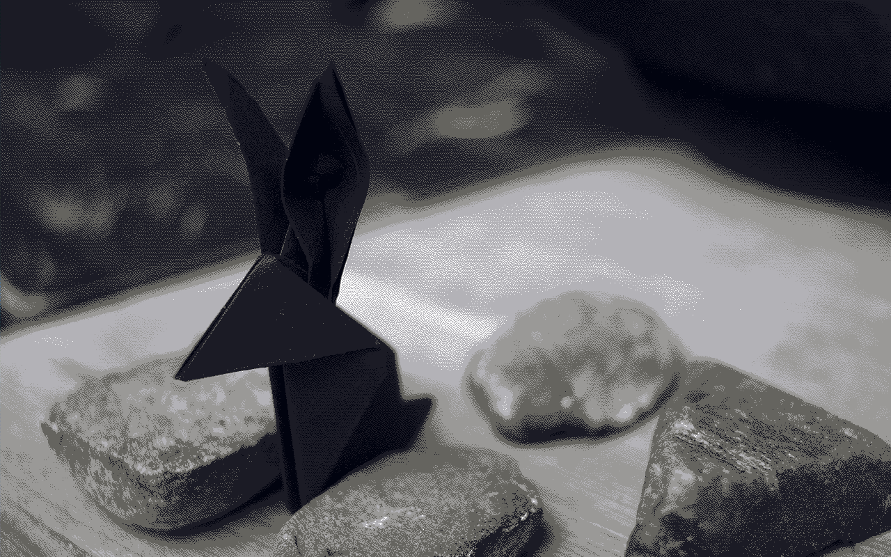
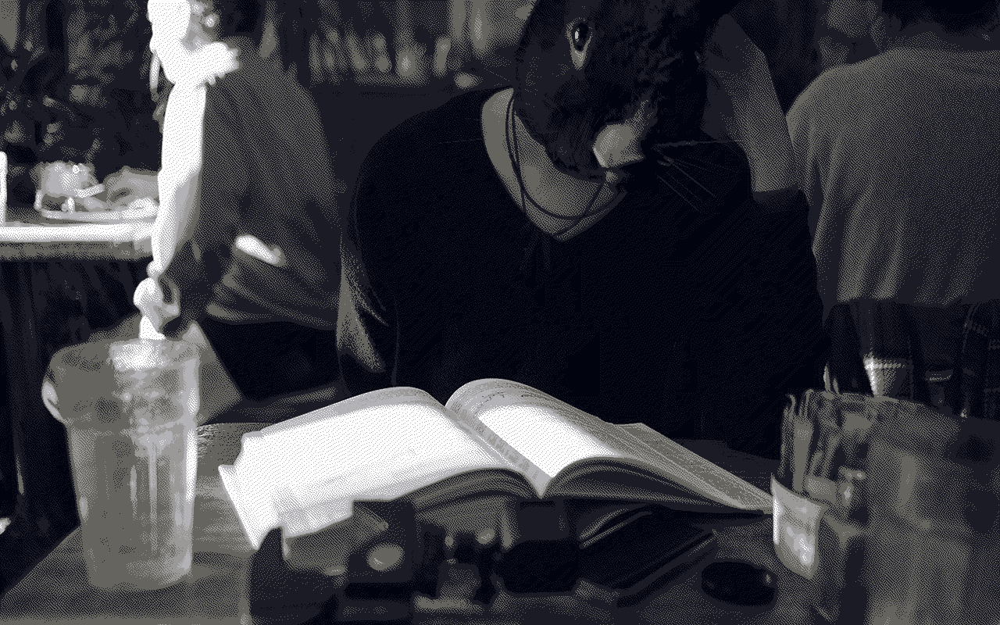

mission
We founded Hundred Rabbits with the goal of building a platform that could enable us to dedicate our time to the creation of free & open-source software such as Grimgrains and Orca, as well as contribute to the open-source projects of others.
Dotgrid and Left were both originally created to be used internally, but have evolved into mature applications used by thousands of creators. The development was done with their source code available publicly from the start, which allowed for collaborations that benefited all users.
Our intermittent internet connection makes for unpredictable release patterns, and spotty technical support, but helping users to fix their issues and modify the software to better suit their needs, encouraged people help each other to find solutions, and submit revisions for everyone to enjoy.
energy usage
The energy required to power tools such as Xcode and Photoshop keeps growing, and the large and incessant updates have often long stopped adding worthwhile improvements. While fashionable devices and protocols exacerbate planned obsolescence, bloated software increase energy usage and shorten the lifespan of computers.
We have decided to focus on documenting, and archiving, means of reusing and repairing older devices and programs. All of our tools are designed to work offline first, operate with little-power on older devices and operating systems. Operating this way, we can keep creating content while off-grid, and when our power and connectivity is limited.
Go slow, and fix things.